Publications
For the most up-to-date list, see
Google Scholar.
* denotes equal contribution.
2026
-
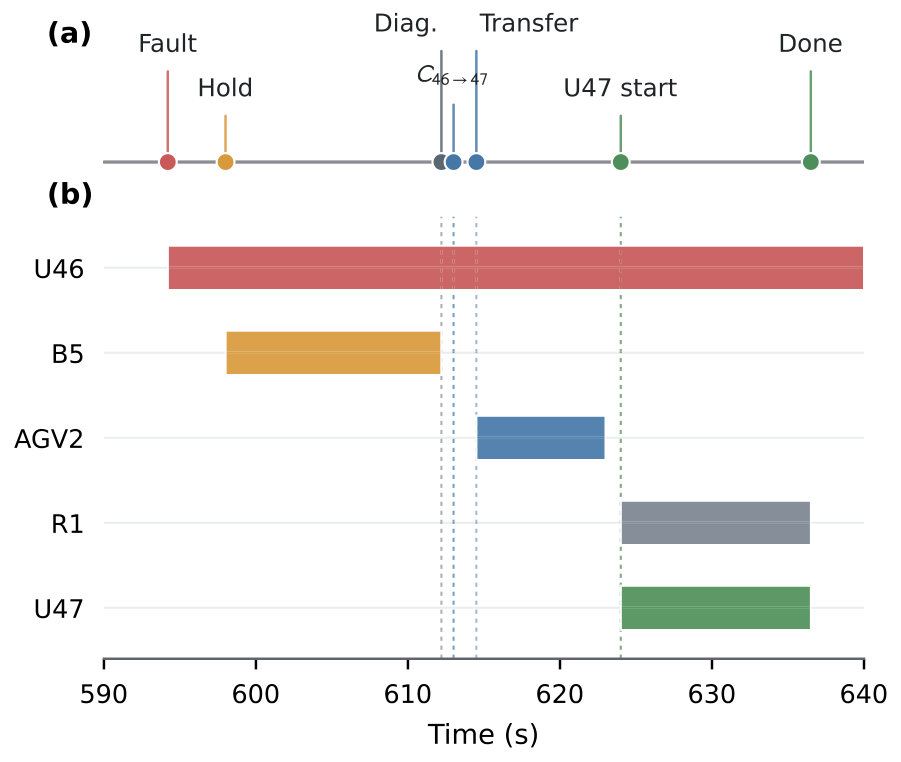
Certified Supervisory Recovery and Scheduling for Automated Manufacturing Systems under Diagnosis Delay
Gang Chen, Peng Wei
ISA Transactions, 2026
Paper
-
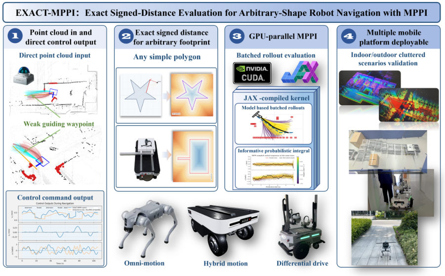
EXACT-MPPI: Exact Signed-Distance Navigation for Arbitrary-Footprint Robots from Point Clouds via Path Integral Control
Chen Peng, Zhikang Ge, Wenwu Lu, Haiming Gao, Stavros Vougioukas, Peng Wei
arXiv preprint, 2026
PaperWebsiteCode
-
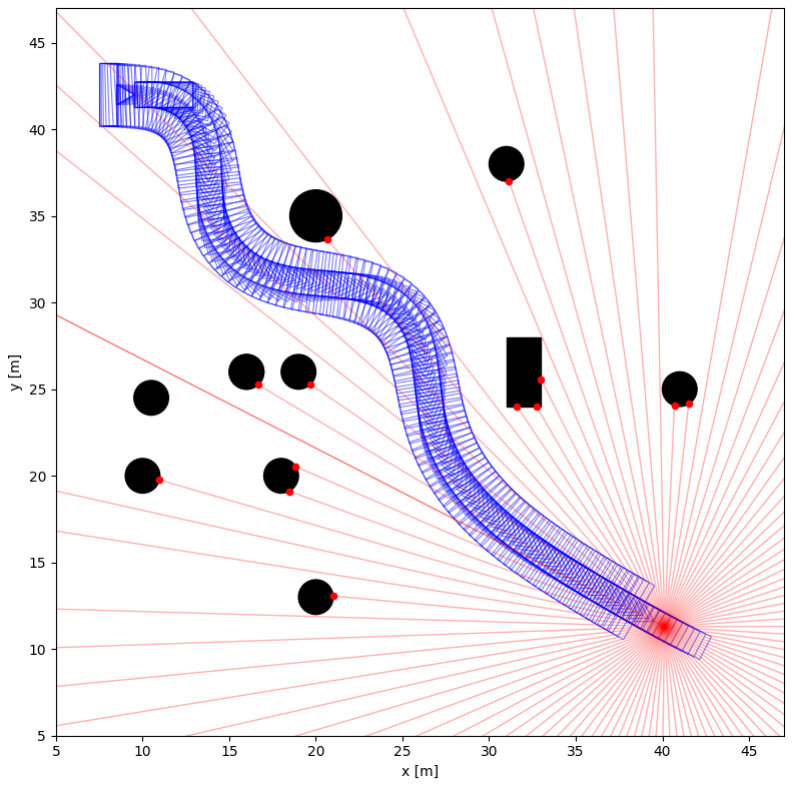
Neural Distance-Guided Path Integral Control for Tractor-Trailer Navigation
Peng Wei, Chen Peng, Stavros Vougioukas
IFAC World Congress, 2026
Paper
-
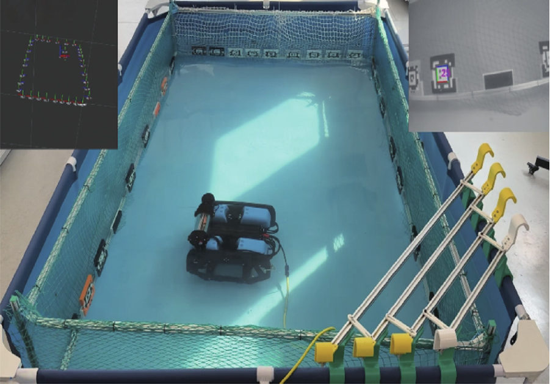
Fast Deployable Robust Control for Structured Offshore Aquaculture Platforms Inspection with Adaptive Disturbance Compensator
Zhikang Ge*, Peng Wei*, Wenwu Lu, Kangyue Shi, Fang Yang, Zhihong Man, Haiming Gao, Yibin Ying, Chen Peng
Biomimetic Intelligence and Robotics, 2026
Paper
-
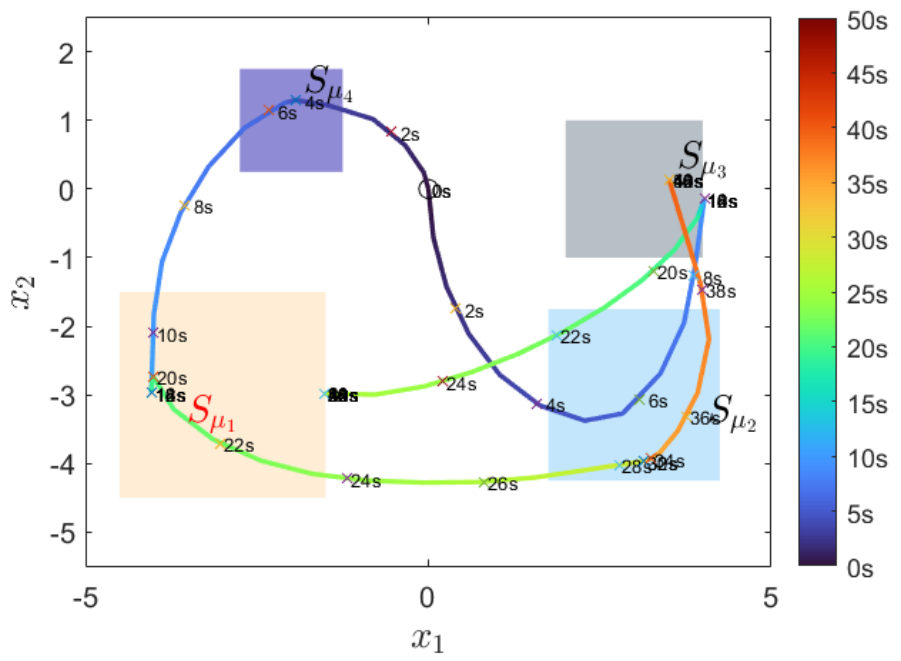
Collaborative Design of Fault Diagnosis and Fault Tolerance Control under Nested Signal Temporal Logic Specifications
Penghong Lu, Gang Chen, Peng Wei, Rong Su
IEEE Transactions on Automation Science and Engineering, 2026
PaperarXiv
-
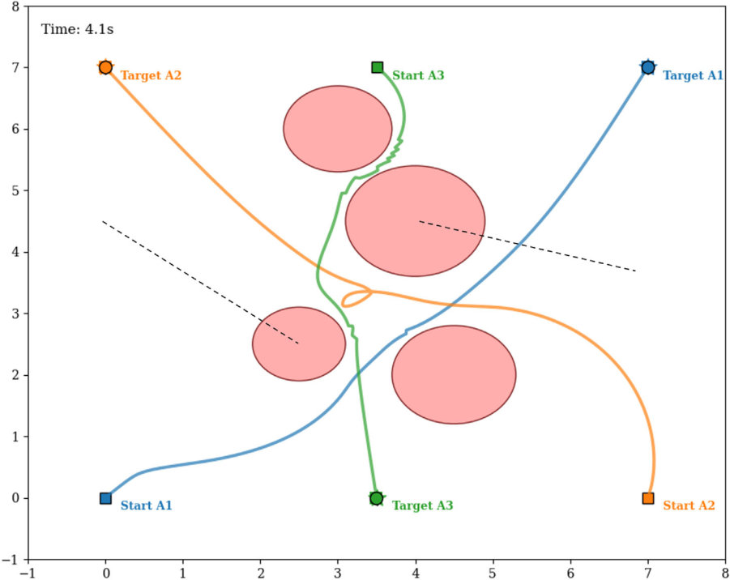
Optimization-Free Safety and Task Execution for High-Order Multi-Agent Systems via STL-Guided Auxiliary Reference Governor
Penghong Lu, Zhenpeng Lao, Jiarui Zhang, Peng Wei, Gang Chen
International Journal of Robust and Nonlinear Control, 2026
Paper
-
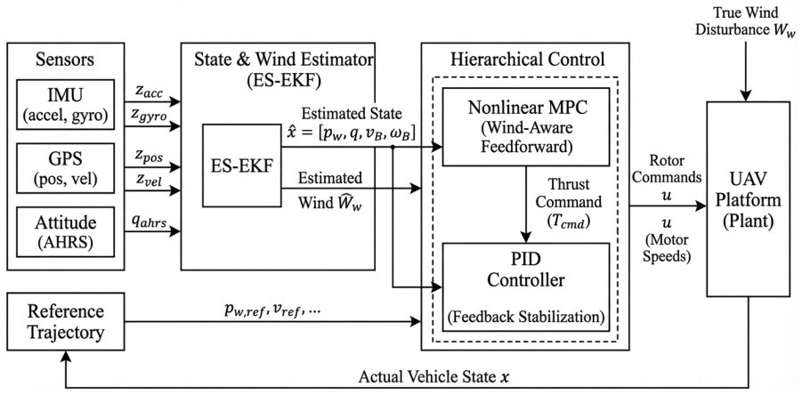
Real-Time, Onboard, Model-Based Wind Estimation and Control for Multirotor UAVs Flying in Winds
Baihan Chen, Xinming Han, Peng Wei, Javier González-Rocha, Zhaodan Kong
AIAA SciTech Forum, 2026
Paper
2025
-
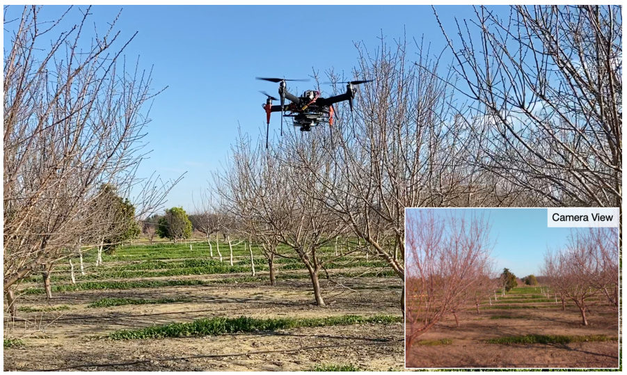
Vision-Based Navigation of Unmanned Aerial Vehicles in Orchards: An Imitation Learning Approach
Peng Wei, Prabhash Ragbir, Stavros Vougioukas, Zhaodan Kong
Computers and Electronics in Agriculture, 2025
PaperarXivDatasetVideo
-
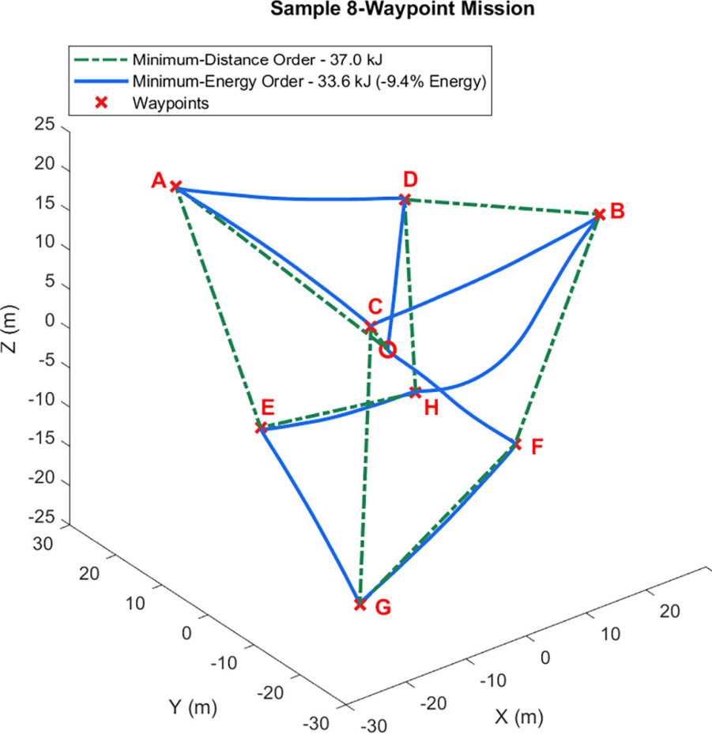
Optimization of Three-Dimensional Waypoint Ordering for Energy-Optimal Multirotor Operation
Nicolas Michel, Ayush Patnaik, Peng Wei, Zhaodan Kong, Xinfan Lin
Aerospace Science and Technology, 2025
Paper
-
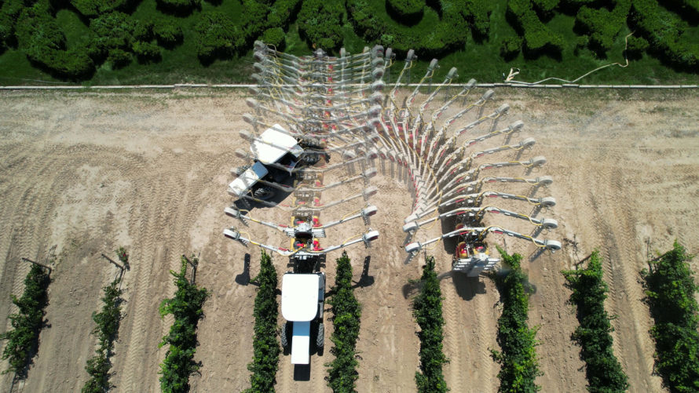
Efficient and Safe Trajectory Planning for Autonomous Agricultural Vehicle Headland Turning in Cluttered Orchard Environments
Peng Wei, Chen Peng, Wenwu Lu, Yuankai Zhu, Stavros Vougioukas, Zhenghao Fei, Zhikang Ge
IEEE Robotics and Automation Letters, 2025
PaperarXivWebsiteCode
-
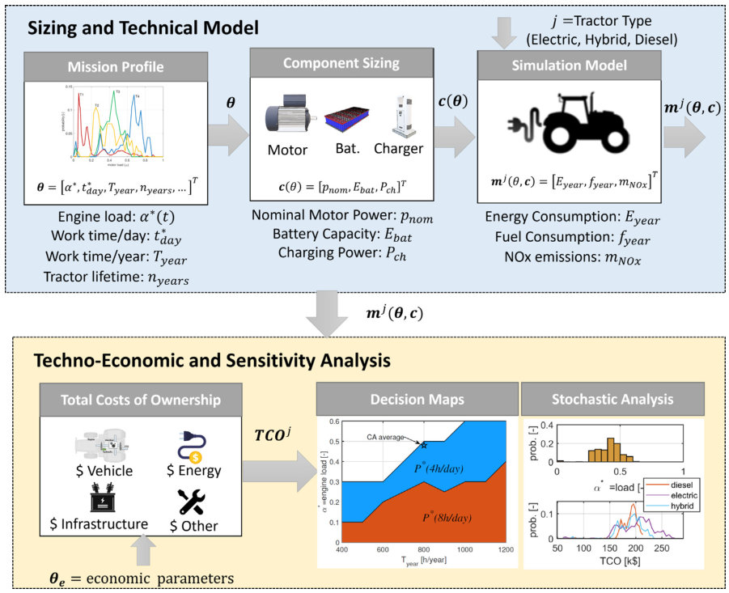
Unlocking the Potential of Electric and Hybrid Tractors via Sensitivity and Techno-Economic Analysis
Dilawer Ali, Ricardo de Castro, Reza Ehsani, Stavros Vougioukas, Peng Wei
Applied Energy, 2025
Paper
-
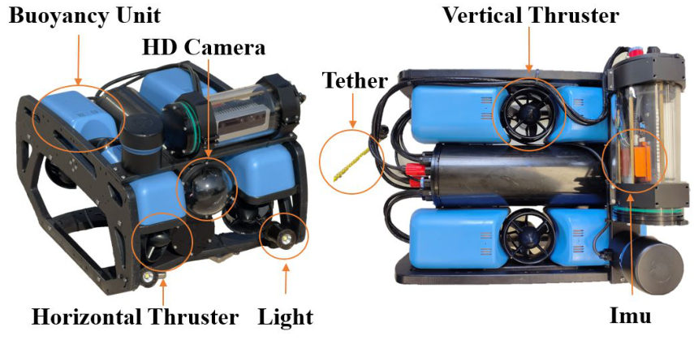
A Navigation System for ROV’s Inspection on Fish Net Cage
Zhikang Ge, Fang Yang, Wenwu Lu, Peng Wei, Yibin Ying, Chen Peng
IFAC Conference on Sensing, Control and Automation Technologies for Agriculture (AGRICONTROL), 2025
PaperarXiv
2024
-
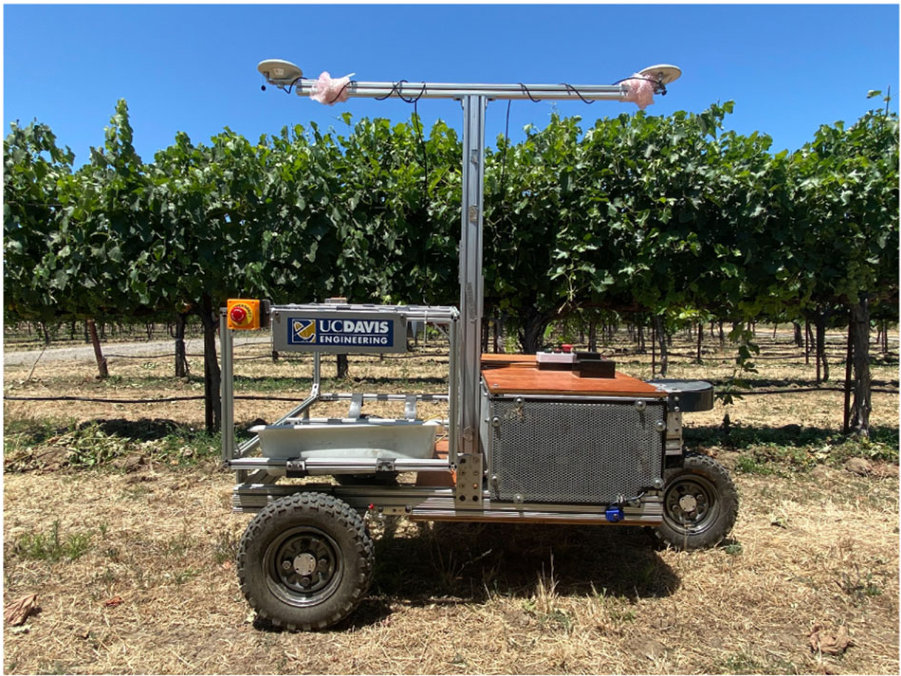
Optimization-Based Motion Planning for Autonomous Agricultural Vehicles Turning in Constrained Headlands
Chen Peng*, Peng Wei*, Zhenghao Fei, Yuankai Zhu, Stavros Vougioukas
Journal of Field Robotics, 2024
PaperarXivCodeVideo
-
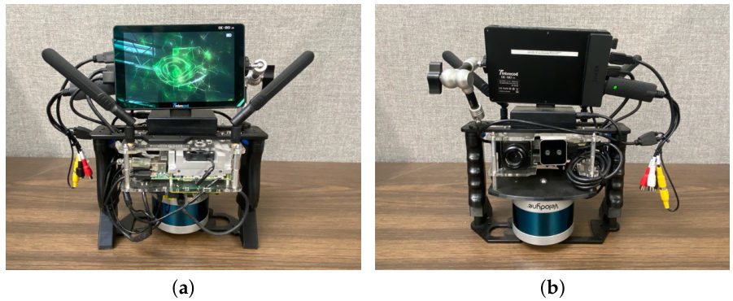
A Compact Handheld Sensor Package with Sensor Fusion for Comprehensive and Robust 3D Mapping
Peng Wei, Kaiming Fu, Juan Villacres, Thomas Ke, Kay Krachenfels, Curtis Ryan Stofer, Nima Bayati, Qikai Gao, Bill Zhang, Eric Vanacker, Zhaodan Kong
Sensors, 2024
PaperCode
2023
-
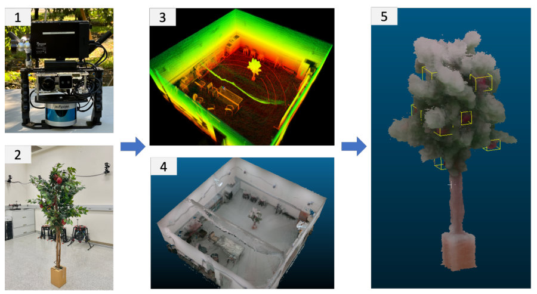
Fusion-Driven Tree Reconstruction and Fruit Localization: Advancing Precision in Agriculture
Kaiming Fu*, Peng Wei*, Juan Villacres, Zhaodan Kong, Stavros Vougioukas, Brian N. Bailey
IROS Workshop on Robotics in Agriculture, 2023
Paper
-
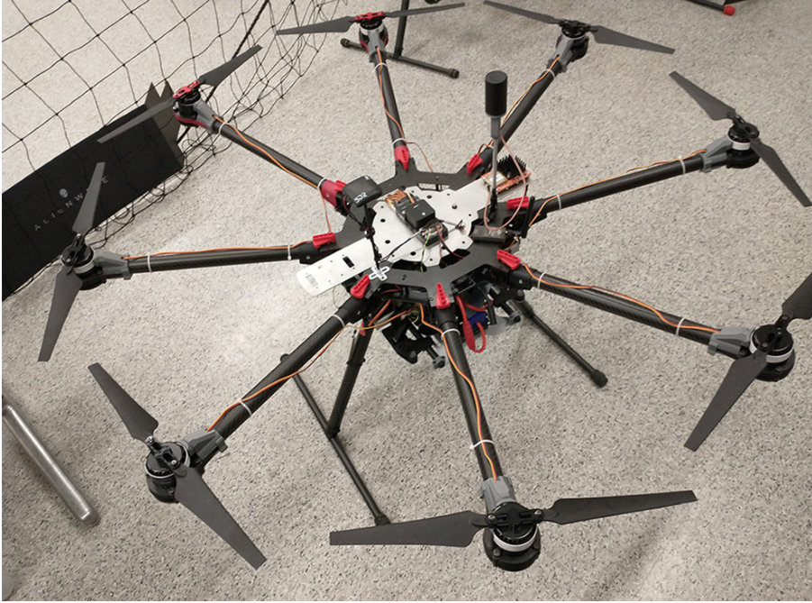
Energy-Optimal Unmanned Aerial Vehicles Motion Planning and Control Based on Integrated System Physical Dynamics
Nicolas Michel, Peng Wei, Zhaodan Kong, Xinfan Lin
Journal of Dynamic Systems, Measurement, and Control, 2023
Paper
2022
-
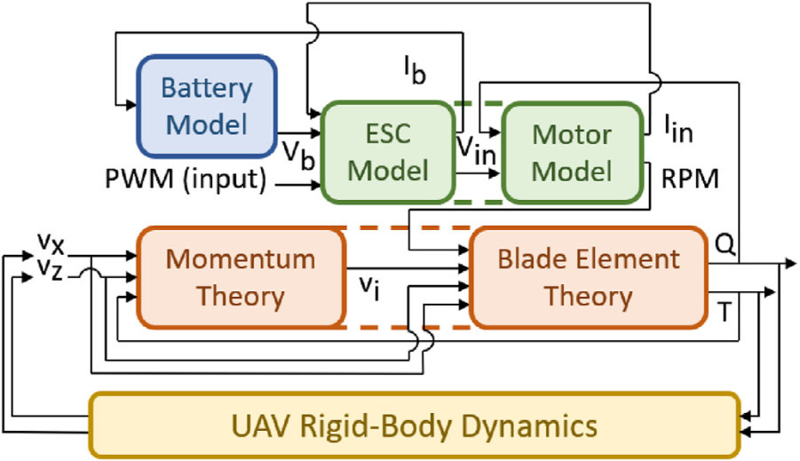
Modeling and Validation of Electric Multirotor Unmanned Aerial Vehicle System Energy Dynamics
Nicolas Michel, Peng Wei, Zhaodan Kong, Anish Kumar Sinha, Xinfan Lin
eTransportation, 2022
Paper
-
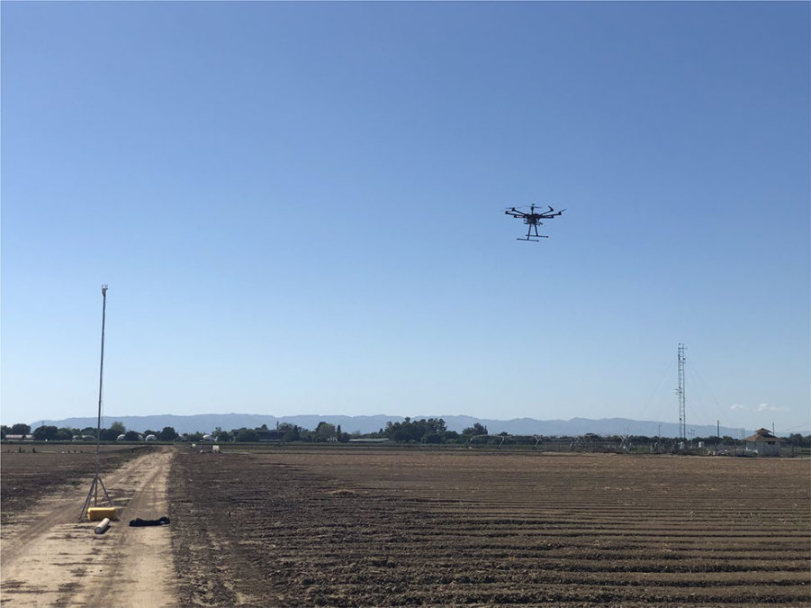
System Identification of Wind Effects on Multirotor Aircraft
Peng Wei, Xinfan Lin, Zhaodan Kong
International Journal of Intelligent Robotics and Applications, 2022
PaperVideo
-
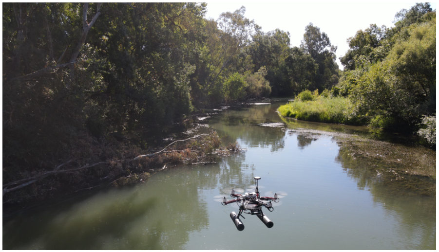
Vision-Based 2D Navigation of Unmanned Aerial Vehicles in Riverine Environments with Imitation Learning
Peng Wei, Ryan Liang, Andrew Michelmore, Zhaodan Kong
Journal of Intelligent & Robotic Systems, 2022
PaperVideoAttention Map
2021
-
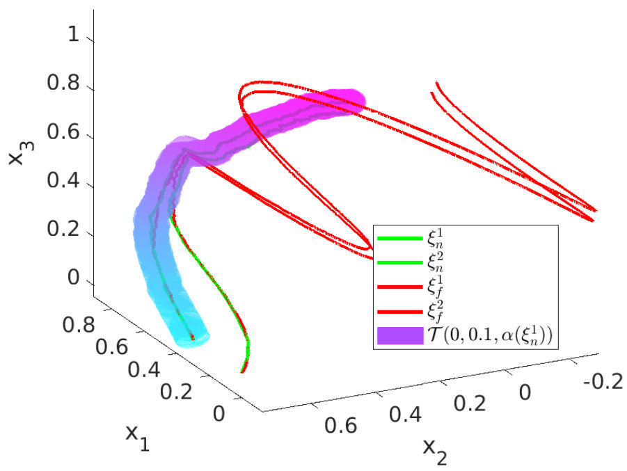
Temporal Logic Inference for Fault Detection of Switched Systems with Gaussian Process Dynamics
Gang Chen, Peng Wei, Mei Liu
IEEE Transactions on Automation Science and Engineering, 2021
Paper
2020
-
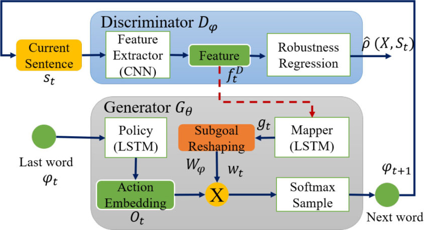
Formal Language Generation for Fault Diagnosis with Spectral Logic via Adversarial Training
Gang Chen, Peng Wei, Huiming Jiang, Mei Liu
IEEE Transactions on Industrial Informatics, 2020
Paper
2019
-
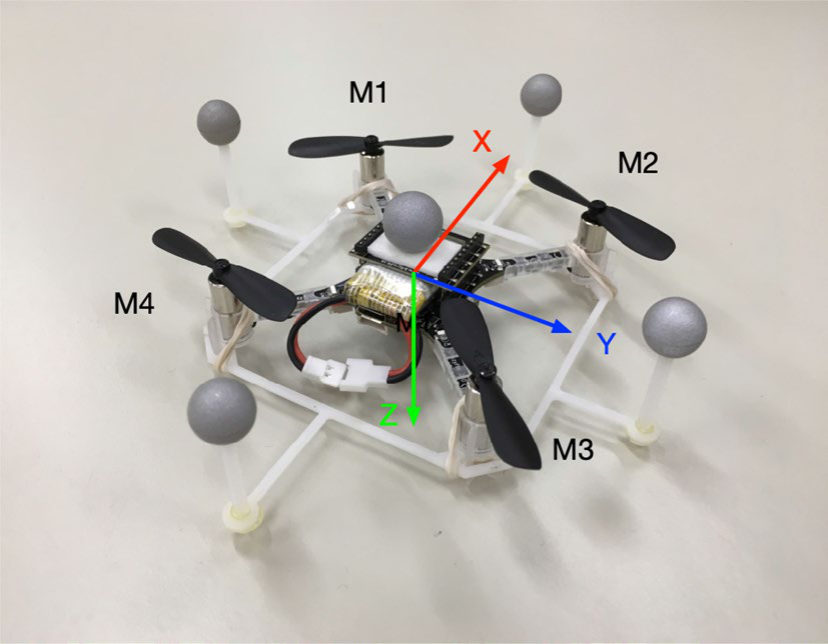
Mitigating Ground Effect on Mini Quadcopters with Model Reference Adaptive Control
Peng Wei, Sui Nam Chan, Seongkyu Lee, Zhaodan Kong
International Journal of Intelligent Robotics and Applications, 2019
PaperCodeVideo